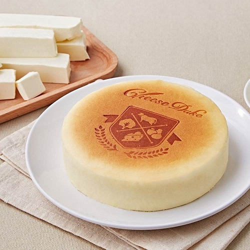

我們也相信「土地，純粹，永續」的連結，走向產地，拉近小農與彼此友善土地之間的距離， 用商業的力量，推動美好的綠色甜點環境。
這幾年獲得連續4年金馬獎指定品牌、國際亞洲無添加A.A.美食獎三星、比利時風味絕佳獎章iTQi絕佳風味獎、國際上海時裝週指定甜點等， 各大獎項的肯定，也讓我們成功以甜點將台灣帶上國際舞台，而這只是個開端， 我們相信未來還有更多的可能。
在「起士公爵」的每一口甜點中，你都能感受到「簡單真實」的美好實踐。

心之和 春上布丁蛋糕 亞尼克 課後心得